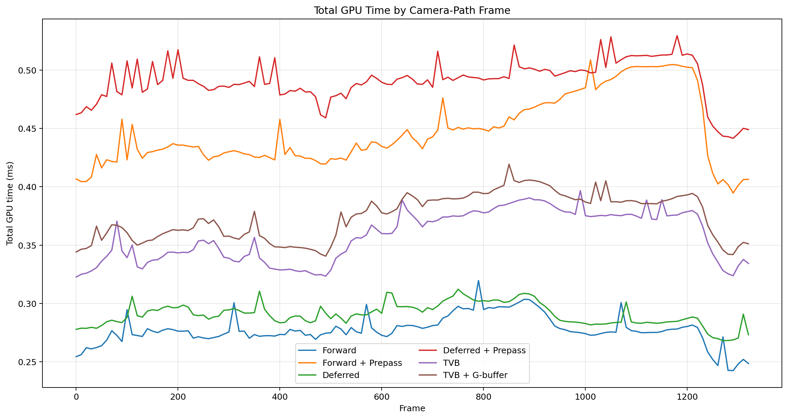
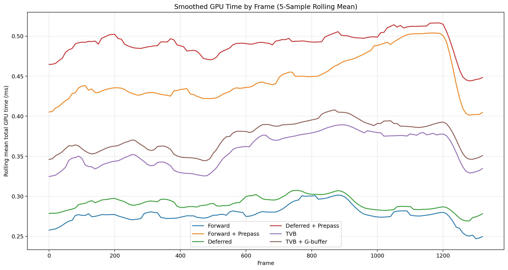
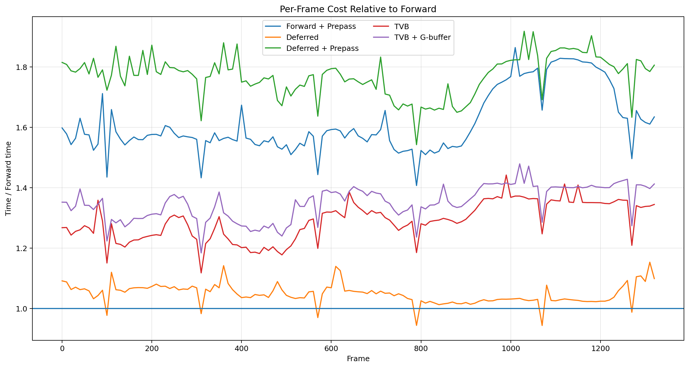
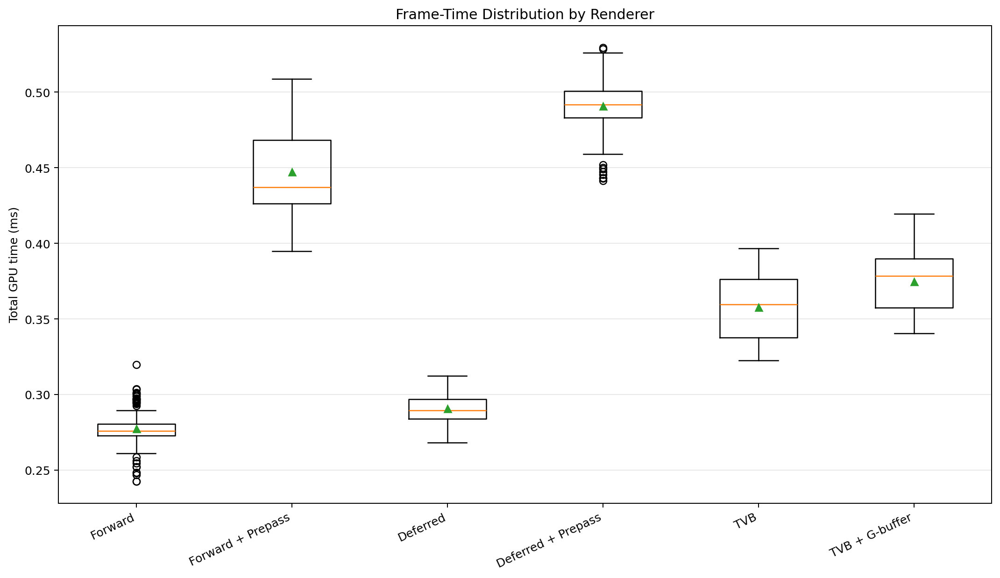
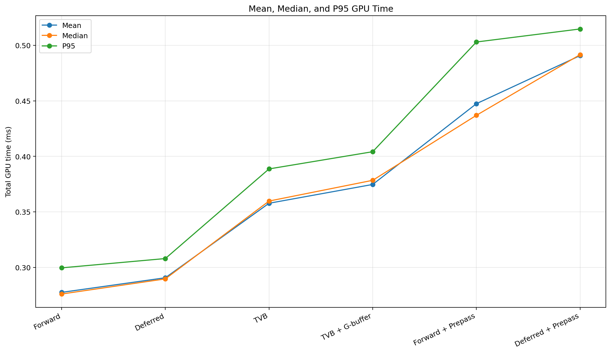
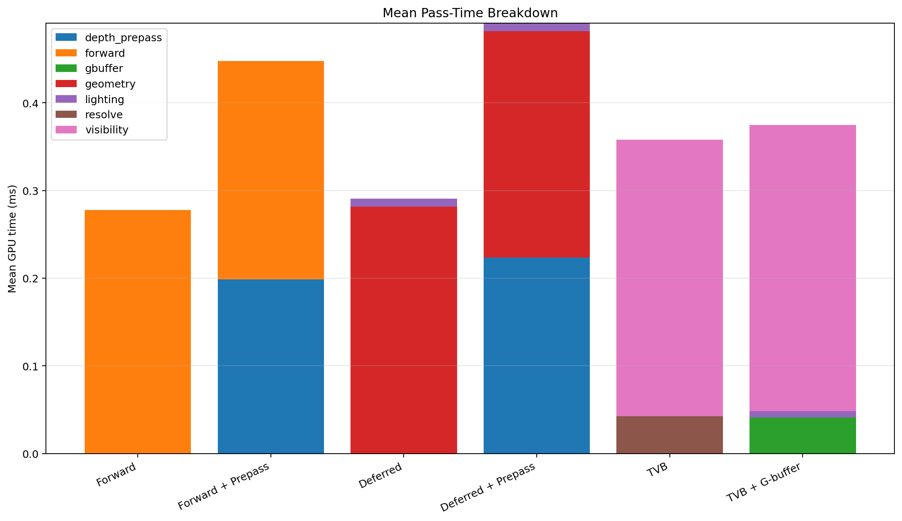
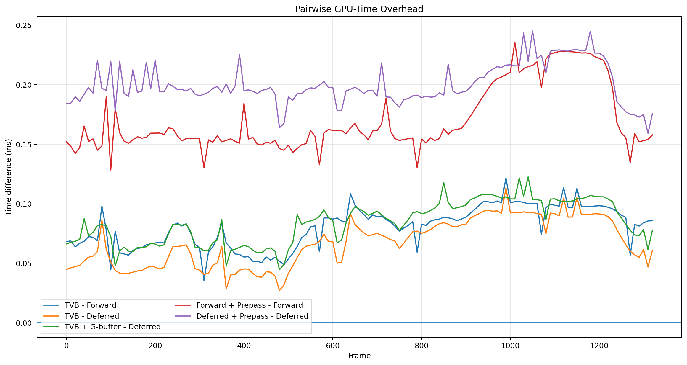
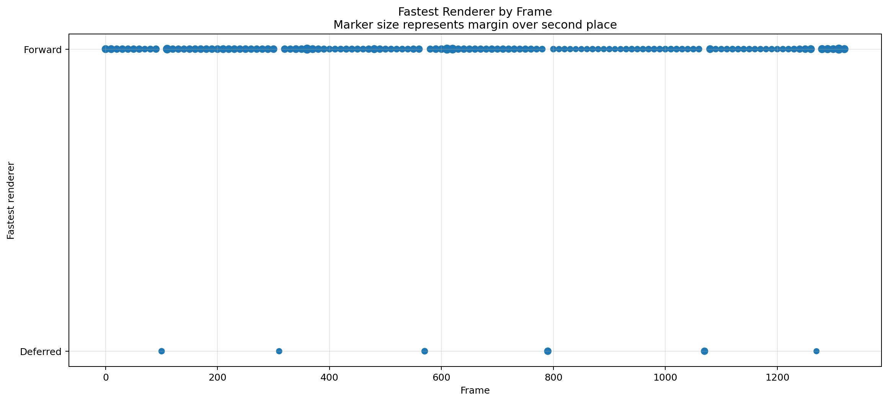
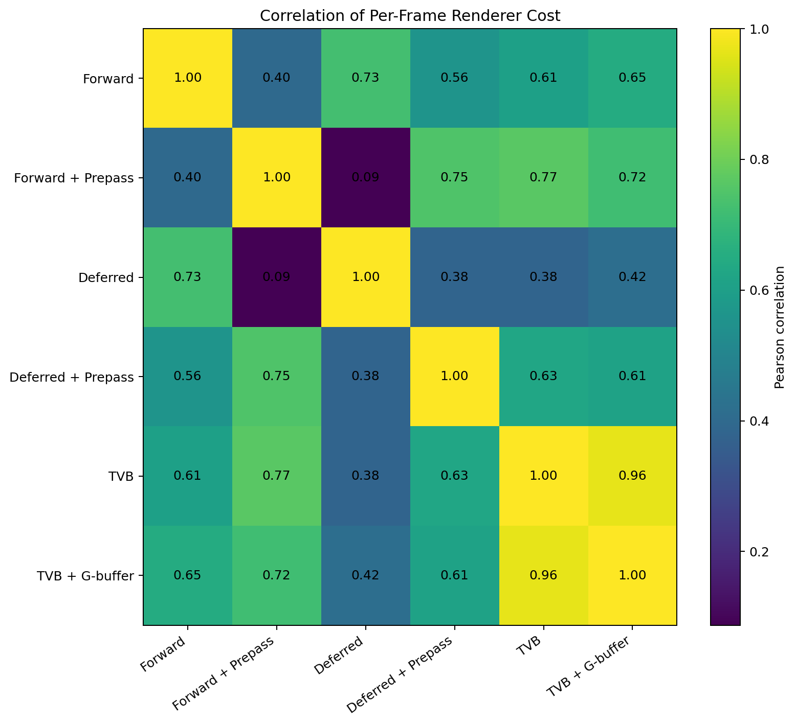
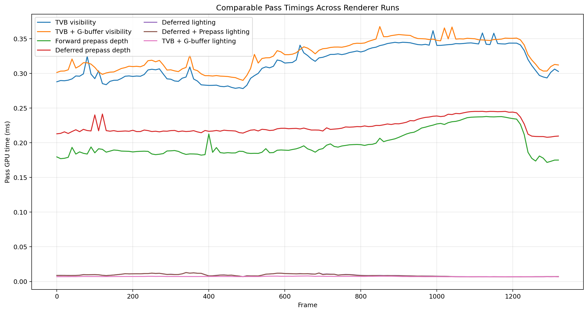

VisibilityBufferInfo Camera-Path Timing Plots
Total은 각 CSV의 pass 열 합으로 계산했다. 시간 단위는 프로젝트 맥락상 ms로 표기했다.
01_total_time_by_frame

02_rolling_mean_by_frame

03_relative_to_forward

04_time_distribution_boxplot

05_mean_median_p95

06_mean_pass_breakdown

07_pairwise_overhead_by_frame

08_winner_timeline

09_renderer_correlation

10_shared_pass_consistency
